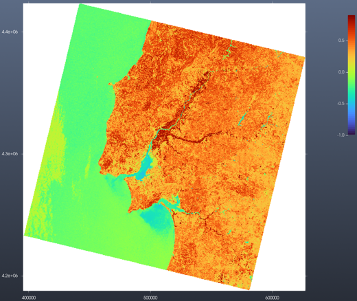
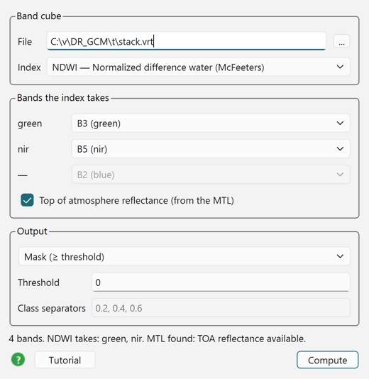
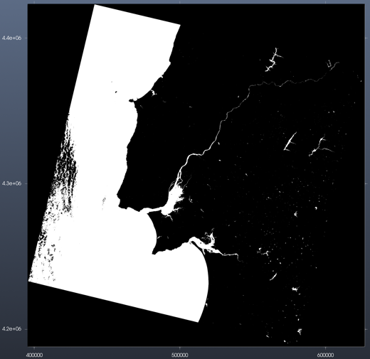
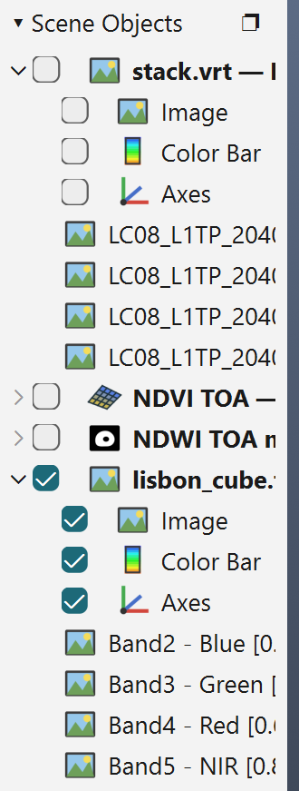
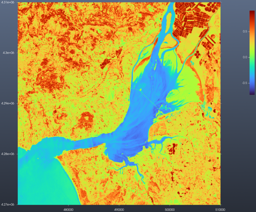

Tutorial: Landsat bands to NDVI and a water mask
Satellite → Remote sensing → Spectral indices… and Band cube (cut)… — the Tutorial button at the bottom of either dialog opens this page; the green ? beside it opens the reference for every field, the Remote sensing page.
This tutorial takes one Landsat 8 scene of the Lisbon region, on 28 July 2021, from its band files to a vegetation index (NDVI), a water mask, and a cube of the city and the Tagus estuary.
The data
The scene is LC08_L1TP_204033_20210728_20210804_02_T1: Landsat 8, path 204, row 033, Collection 2 Level-1. Get it from USGS EarthExplorer (https://earthexplorer.usgs.gov, a free account): search that ID under Landsat → Landsat Collection 2 Level-1 → Landsat 8-9 OLI/TIRS C2 L1, and from the product's options download the bands B2, B3, B4, B5 (blue, green, red, near infrared) and the MTL.txt, all into one folder.
Stack the four bands with a .vrt — a small text file that lists them, nothing is copied — from Julia:
using GMT
cd("C:/landsat") # the folder with the bands
b = ["LC08_L1TP_204033_20210728_20210804_02_T1_B$k.TIF" for k in 2:5]
gdalbuildvrt(b, ["-separate"]; save = "stack.vrt")(or gdalbuildvrt -separate stack.vrt …_B2.TIF …_B3.TIF …_B4.TIF …_B5.TIF in a terminal).
Example 1 — Open the stack
File → Open stack.vrt. The window shows its first band, B2. Its group in Scene Objects lists the four band files below the usual rows:

Click one of them for Load file: that band opens in the window on its own, as File → Open would open it. Hover one for its full path.
Example 2 — NDVI, on reflectance
Open Satellite → Remote sensing → Spectral indices…. The File is the window's stack.vrt, the Index is NDVI, and its two band slots are already filled: red with B4 (red) and nir with B5 (nir) — the file names tell which Landsat bands these are. The MTL is beside the bands, so Top of atmosphere reflectance is ticked: each band is calibrated to reflectance before the index is computed.

Press Compute. NDVI TOA — stack joins the window:

- the land is orange to dark red: vegetation, dry in late July except where it is watered or wooded; the dark red band across the middle is the farmland and woods along the Tagus valley;
- water is green to blue (NDVI at or below 0): the ocean, the Tagus and Sado estuaries, the reservoirs inland;
- the yellow-green streaks along the scene's western edge are clouds over the ocean;
- the corners outside the scene's swath have no data, and stay empty.
Example 3 — A water mask
In the same dialog, set Index to NDWI — Normalized difference water (McFeeters): its slots become green (B3 (green)) and nir (B5 (nir)). Set Output to Mask (≥ threshold) and Threshold to 0 — open water is where NDWI is positive.

Compute gives a black and white image, white where there is water:

The ocean and both estuaries are one white body; inland the Tagus can be followed upstream, and the reservoirs stand out. Where the clouds are over the sea the mask breaks into black specks: clouds are not water.
Example 4 — A cube of Lisbon and the estuary
A whole scene is 7721 × 7851 pixels a band. Cut the four bands to a 40 × 40 km block around the estuary, into one file: open Satellite → Remote sensing → Band cube (cut)…. Opened over the .vrt, Band files already lists its four bands, all checked. Type the Region in the bands' own UTM metres — W 470000, E 510000, S 4270000, N 4310000 — and a Save as file:

(Use the first band's extent fills the four boxes with the whole scene's limits, to trim by hand; OR Use the drawn rectangle takes a rectangle drawn on the window with Draw → Rectangle.)
Press Build cube. The cube opens in the window, and its group lists its four bands by name:

Click a band for Load band: it joins the window as a layer of its own.
The cube keeps the scene's MTL in its metadata. In Spectral indices, point File at the cube and compute NDVI again — Top of atmosphere reflectance is available, with no MTL file beside it:

At 30 m the block shows the city's parks and woods (red) among the built-up land (yellow), the estuary's tidal flats and channels (blue), and, upstream in the north-east, the watered fields of the Tagus lezíria — centre pivots included.
Try next
- Classes: NDVI with Output Classes (up to 3 separators) and
0.2, 0.4, 0.6— bare, sparse, moderate and dense vegetation as four classes. - The other side of the mask: Mask (< threshold) with the same NDWI 0 gives the land.
- One field only: Draw → Rectangle over the lezíria, then in Band cube OR Use the drawn rectangle and Build cube.
- More bands: download B6 and B7 (SWIR) too and add them to the .vrt or the cube's file list. MNDWI (green, swir2) is the better water index where water lies next to built-up land; NBRI and NDMI need them as well.
- Untick a band: in Band cube, untick the files you do not need — only the checked ones go into the cube — or drag them into another order.